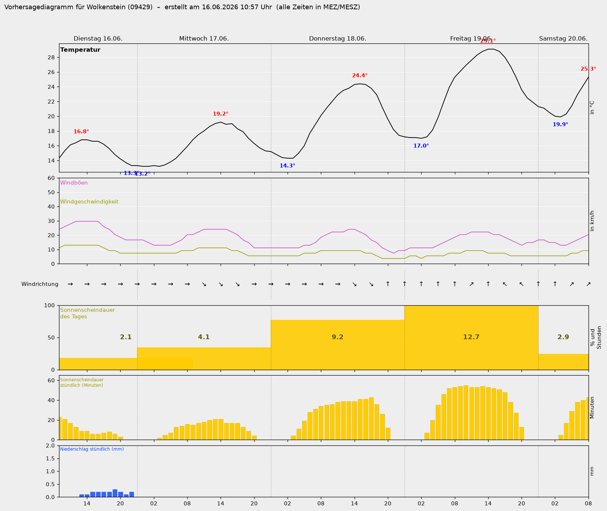

Vorhersage · DWD MOSMIX · Station Marienberg 10579
Wetter
Wolkenstein
Grafik erstellt am
wird geladen…

09429 Wolkenstein
Erzgebirge · Sachsen
Aktualisierung alle 6 h
5:00 · 11:00 · 17:00 · 23:00 Uhr
↻ Jetzt laden
Nächste Aktualisierung